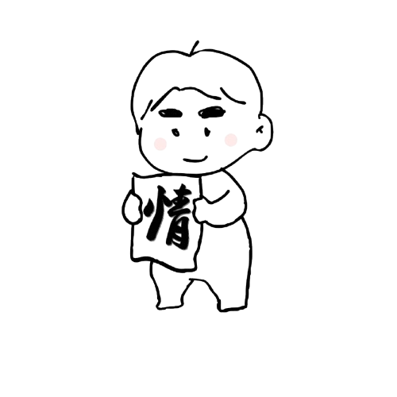
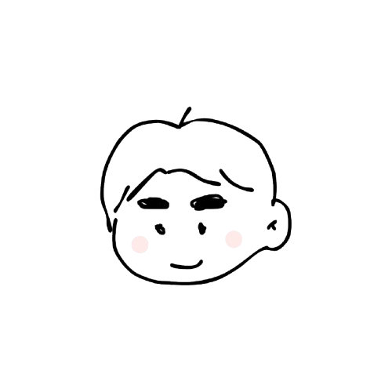

정주는 아홉살은 어린아이들처럼 맑고 순수한 마음으로 우리 사회에 따뜻한 온기를 나르는 봉사동아리입니다. 대가나 보상을 바라는 마음을 걷어내고, 보이지 않는 벽이 생겨나는 개인주의 사회에서 이웃과 마주 보고 따뜻한 정을 채우고자 뭉쳤습니다.
저희와 뜻을 함께하여 우리 사회를 더 다정하게 가꾸어 갈 1일 크루, 소중한 '정원'이 되어 함께 꽃을 피워보세요.
동아리 '정주는 아홉살'을 이끌어가며 따뜻한 온기의 씨앗을 심는 운영진들입니다.

단순한 봉사의 행위를 넘어, 마음속 깊이 정이 녹아들 수 있는 따뜻한 챌린지와 나눔을 기획합니다.
동네 경비원님, 바쁜 택배기사님, 소방관님 등 일상 속에서 마주하지만 잘 알지 못했던 이웃들의 소중한 삶에 감사와 정을 담은 손편지를 직접 적고 전해드립니다.
주변 소중한 지인에게 먼저 따뜻한 안부를 묻고 감사를 고백하며, SNS 릴레이 챌린지를 통해 더 많은 사람들이 일상에서 소소한 정을 되짚고 퍼뜨리도록 돕습니다.
새싹 아이콘(🌱)이 표기된 날짜를 클릭하여 예정된 봉사 활동의 상세 내용을 확인해 보세요!
상세 내용이 들어갑니다.
저희는 크루원 대신 **'정원(情員/Garden)'**이라는 이름으로 함께합니다. 정원 속을 둥둥 떠다니는 귀여운 캐릭터들을 클릭해 그들이 나눈 따뜻한 온기 기록을 들여다보세요!
현재 정원에 자라나는 소중한 싹들: 4명
가벼운 일상 상황 속 10가지 질문에 답해보고, 마음속 숨어있던 나의 순수한 '정도' 백분율을 자가 진단해 보세요!
사회가 각박해졌다고 하지만, 우리의 본성은 여전히 다정함을 품고 있을 것입니다.
총 10개의 짧은 동심 퀴즈를 통해 진정한 '정도(情度)' 레벨을 측정해 보세요.
결과 분석 내용...